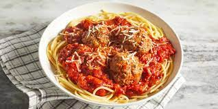

Spaghetti

How to Make Spaghetti
Spaghetti is a classic dry Italian pasta with a long, solid, string-like shape. It forms the basis of many classic pasta dishes such as Spaghetti and Meatballs, spaghetti Bolognese, cacio e pepe and spaghetti aglio e olio. It’s also an excellent, inexpensive pantry staple to have on hand for a back pocket pasta dinner anytime. Its neutral profile lends itself to being tossed together with whatever you have on hand, like jarred sauces, leftover veggies or even just olive oil and a scattering of red pepper flakes. Spaghetti is easy to make, but there are some guidelines to follow to ensure consistently cooked and flavorful strands. Here’s how to make spaghetti and some of our favorite tips and tricks. And if you’re looking to add some meatballs, head over to our story How to Make Perfect Meatballs.
Ingredients
- 1 lb. spaghetti noodles
- 1 lb. Italian tomato sauce
- 8 ounces tomato paste
- 2 tablespoons minced onion
- 2 tablespoons minced garlic
- 2 tablespoons oil
- 1 lb. ground pork
- 1/2 cup minced carrots and red peppers
- 2 cups diced or thinly sliced hot dogs
- 1 cup water
- 1 tablespoon salt
- 1 teaspoon seasoning mix
- 7 ounces evaporated milk
- grated cheese
Directions
- Cook the noodles according to package directions. Set aside.
- Place the garlic, onion, and oil in a large saucepan or skillet. Saute for 3-4 minutes or until soft and fragrant. Add the ground pork and brown the meat until it’s completely cooked.
- Add the minced vegetables and hot dog pieces and stir to combine. Add the water and allow the mixture to simmer for 10-15 minutes. Add the tomato sauce and tomato paste to the meat and continue to simmer the mixture for another 10-15 minutes. Add the evaporated milk and salt and stir until incorporated.
- Combine the noodles and the sauce in a large pot or mixing bowl. Top with grated cheese. At Cherne they grate a processed cheese similar to Velveeta and let it melt into the top layer of the spaghetti.